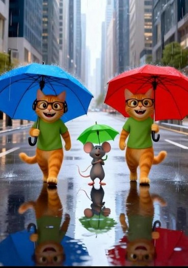
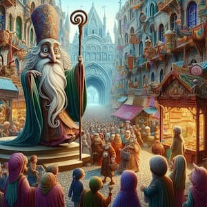

Когда искусство начинает дышать: мои новые ИИ‑работы, которые невозможно пропустить
Вступление
Иногда творчество делает паузу. Не потому что вдохновение ушло — а потому что оно собирается вернуться сильнее.
И вот я снова здесь. С новыми работами, новыми ощущениями и новым взглядом на то, каким стал ИИ‑арт в 2026 году. Он стал теплее. Глубже. Человечнее. И сегодня я хочу показать вам три мира, которые родились из моих экспериментов, эмоций и тихих ночных поисков.
📚 По теме:
Хочешь узнать больше о генерации изображений? Читай мои статьи:
Мои новые работы — три истории, три настроения
1. Городской дождь и маленькое чудо
Есть моменты, которые будто бы случаются не в реальности, а внутри нас. По мокрой улице большого города идут трое: два кота‑джентльмена и маленький мышонок между ними. У каждого свой зонт, свой шаг, свой характер. Но главное — они идут вместе.
Дождь шуршит по крышам, отражения дрожат в лужах, а среди всей этой урбанистической серости вдруг появляется что‑то очень тёплое — забота, дружба, маленькое чудо.

«Городской дождь: когда даже в большом мире есть кто-то, кто укроет тебя»
2. Девушка на берегу тёплого моря
Эта сцена — как вдох после долгого дня. Как момент, когда ты наконец слышишь только шум волн и собственные мысли.
Девушка идёт по золотому песку, ветер играет её косой, море блестит бирюзой. Всё вокруг — чистое, солнечное, живое. Это не просто пляж. Это состояние свободы, когда ты идёшь вперёд не потому, что нужно, а потому что хочется.
Кадр тёплый, мягкий, будто снят на плёнку, которая умеет ловить настроение.

«Свобода: когда идёшь вперёд не потому что нужно, а потому что хочется»
3. Три силы в одном свете
Эта работа — моя любимая. И, возможно, самая сильная из всей серии.
Перед нами — три фигуры, три энергии, три мира. Высоко — мудрый старец, сияющий мягким светом, будто хранитель древнего знания. Внизу — демон, тяжёлый, мощный, словно сама стихия ярости. Рядом — женщина, красивая и опасная, уверенная в себе так, что от неё невозможно отвести взгляд.
Свет падает на них как на актёров древней легенды. Каждый — часть истории, которую чувствуешь кожей.
Лично мне картинка с демоном очень нравится.
У меня есть серия работ с ними, зашли все в топ. А демон красавчик, я его выделил потом в отдельную серию, просто ураган получился, красавчик.
Видео с ним просто шикарные получились. Вот он получился какой то притягательный.

«Баланс сил: между светом и тьмой стоит человек — живой, сложный, настоящий»
Почему эта серия особенная
Пятая статья — это уже не эксперимент. Это стиль. Это голос. Это момент, когда ты перестаёшь просто «генерировать» и начинаешь создавать.
Эти работы — разные по настроению, но объединены одним: они дышат. Они живут. Они рассказывают истории, которые хочется слушать.
А котики с мышью они на клипе забходят в кафе, там заказывают молоко и пьют. И так тпело получилось, уютно
🔜 Что читать дальше?
Заключение
ИИ‑арт сегодня — это не про технологии. Это про чувства. Про то, что можно передать настроение одним кадром. Про то, что можно создавать миры, в которых хочется остаться.
И я рад, что могу делиться этим с вами. Спасибо, что ждёте. Спасибо, что смотрите. Спасибо, что чувствуете, я рад всем посетителям
Кто хочет сам попробовать?, пожалуйста👇
🚀 Хочешь попробовать ИИ без заморочек?
Все нейросети в одном окне • Карты РФ • Без VPN • Первый шаг — всего 290₽
💜 Попробовать Chad AI• Реклама • Партнёрская программа